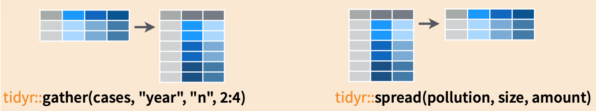

class: clear
.pull-left[
Table 3
| country |
year |
rate |
| Afghanistan |
1999 |
745/19987071 |
| Afghanistan |
2000 |
2666/20595360 |
| Brazil |
1999 |
37737/172006362 |
| Brazil |
2000 |
80488/174504898 |
| China |
1999 |
212258/1272915272 |
| China |
2000 |
213766/1280428583 |
]
.pull-right[
Table 4a
| country |
1999 |
2000 |
| Afghanistan |
745 |
2666 |
| Brazil |
37737 |
80488 |
| China |
212258 |
213766 |
Table 4b
| country |
1999 |
2000 |
| Afghanistan |
2.00e+07 |
2.06e+07 |
| Brazil |
1.72e+08 |
1.75e+08 |
| China |
1.27e+09 |
1.28e+09 |
]
The above tables, while representing the same data, are not equally easy to use.
For example, table $4a$ provides the simplest way for finding the difference in the number of cases between $1999$ and $2000$. Table $1$ is the easiest table to add new variables such as $\mathrm{GDP}$. Table $3$ is not particularly suitable for data analysis, but is possibly useful for data collection. Table $2$ is appropriate if the columns of Table $1$, instead of being *cases* and *populations*, are e.g., *diabetes*, *HIV*, *colon cancer*, ... for which there is possibly missing/unobserved data (that is not all diseases are surveyed for every country).
---
#gather() and spread()
There is often a need to transform data between two different representations exemplified by Table $1$ and Table $2$ in the previous slide. The main tool for doing so are the verbs **gather** and **spread** that are part of the **tidyr** library. For a thoughtful discussion of the motivations behind **tidyr**, see the article [Tidy Data](https://www.jstatsoft.org/article/view/v059i10) by Hadley Wickham.
To convert from Table $1$ to Table $2$, we do
```r
table2 <- gather(table1, key = "type", value = "value", cases, population)
```
Conversely, to convert from Table $2$ to Table $1$, we do
```r
table1 <- spread(table2, type, value)
```
---
class: clear
The idea behind *gather* and *spread* is best described by the following graphic; in particular, *gather* makes "wide" data "longer" while *spread* makes "long" data "wider".

---
class: clear
As another example, consider the following two representations of table $4a$.
```r
table4a %>% gather(key = "year", value = "cases", `1999`, `2000`) %>%
arrange(country, year)
```
```
## # A tibble: 6 x 3
## country year cases
##
## 1 Afghanistan 1999 745
## 2 Afghanistan 2000 2666
## 3 Brazil 1999 37737
## 4 Brazil 2000 80488
## 5 China 1999 212258
## 6 China 2000 213766
```
```r
table4a %>% gather(key = "year", value = "cases", `1999`, `2000`) %>%
spread(year, cases)
```
```
## # A tibble: 3 x 3
## country `1999` `2000`
##
## 1 Afghanistan 745 2666
## 2 Brazil 37737 80488
## 3 China 212258 213766
```